Collaborative and cooperative play
I make games where the material is the space between people. Sometimes that takes a 13-metre dome, cameras and speakers; sometimes it takes a piece of string. Most of them need other people to play; these are collaborative games, made to be played together.
The string game
The string game is just a set of instructions and a piece of string. I have played it hundreds of times and never seen it played the same way twice. The game emerges as we play. Anyone can rebuild it from the five lines above.
This is a piece of string.
It has two ends.
We each take one end.
We can either let go.
Or not.
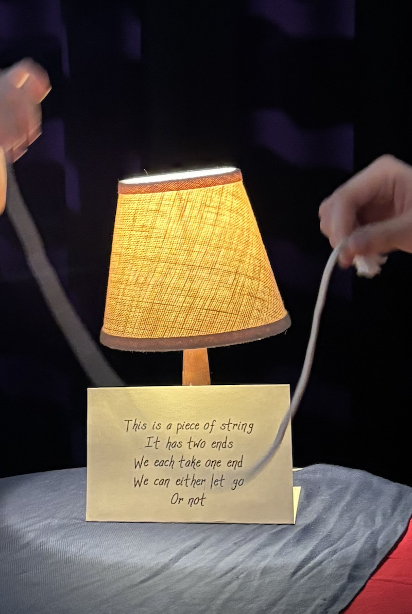
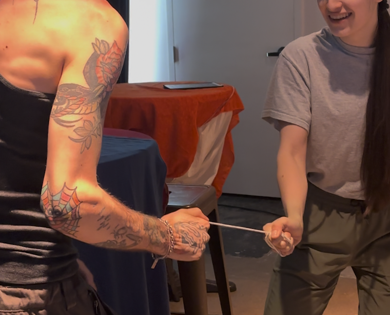
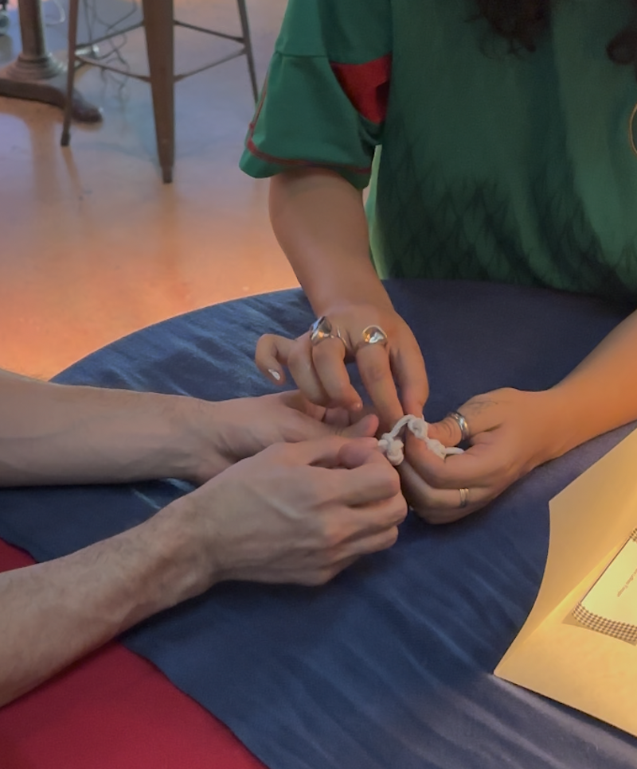
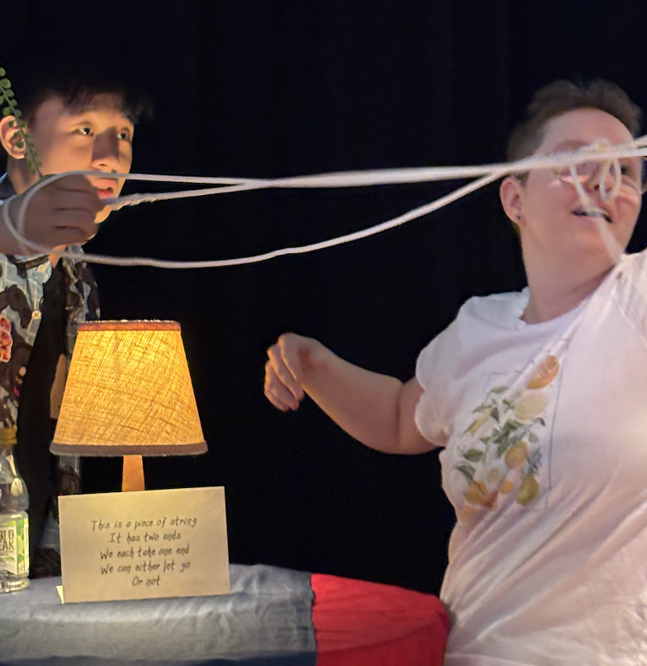
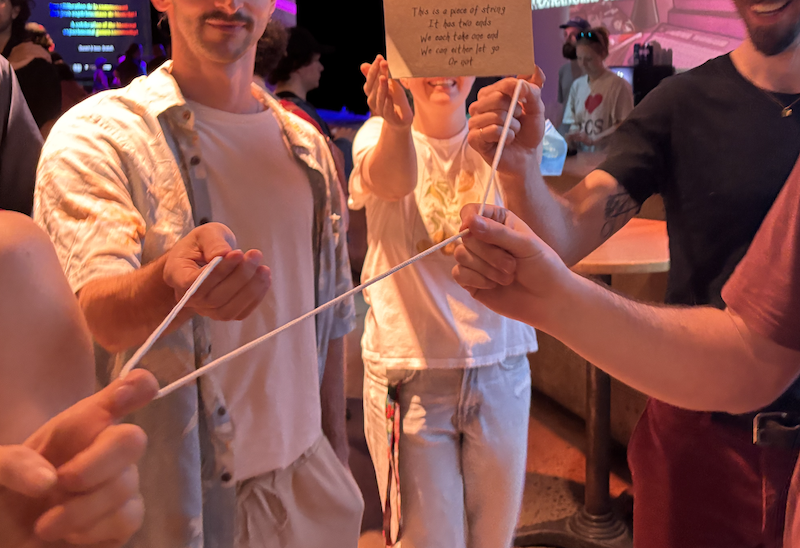
Closer (2016)
Closer is a cooperative game for two people. To start it you must stand close together, and to play it you must work together. A camera tracks both players and creates a single shared sphere in the space between them, growing and shrinking with your proximity. Shown at A MAZE. Johannesburg, Chaos Communication Congress, Beta Public London, PLAY Hamburg, CodeMotion Berlin, and elsewhere.
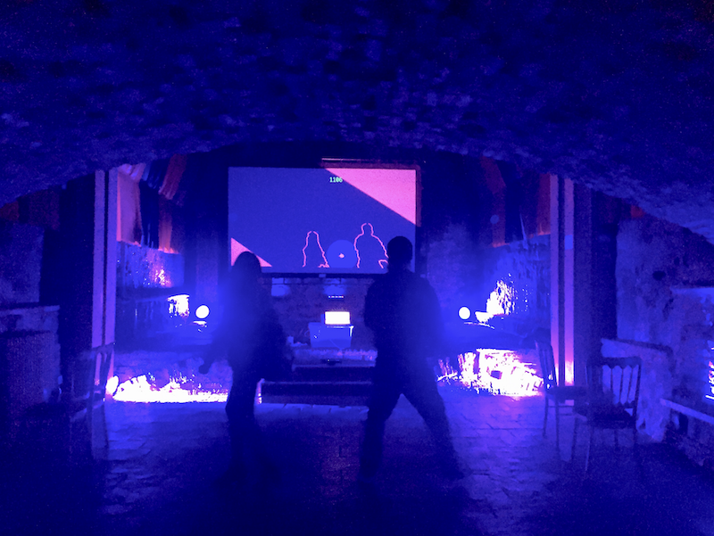
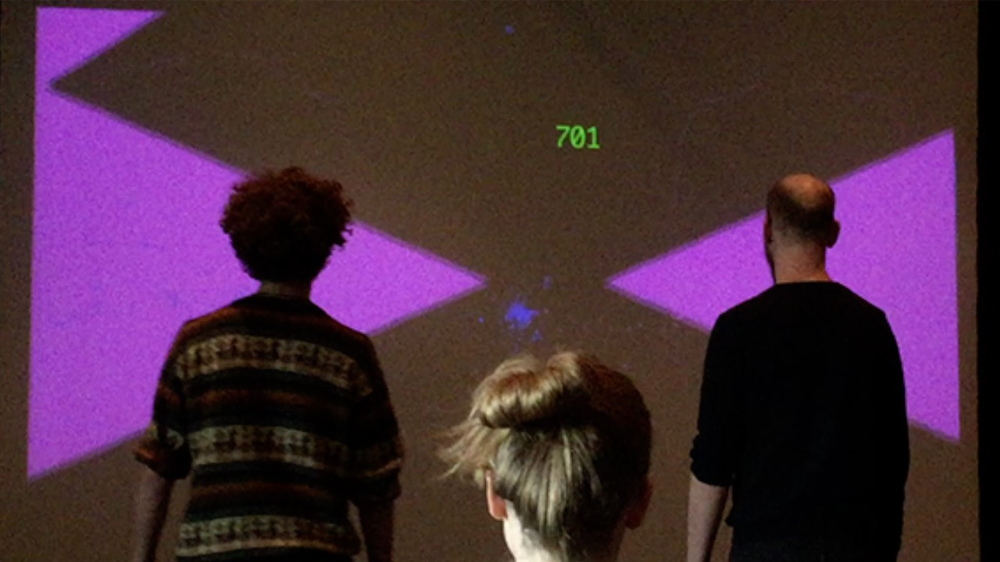
Follow (2019)
Follow is a two-person cooperative game about shared control and the intimacy of opposition. I made it at the NYU Game Center for the No Quarter exhibition.
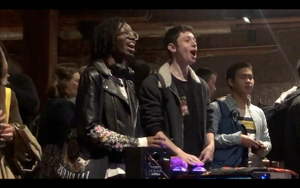
Common (2018)
Common is a city-wide game for CAFKA (Contemporary Art Forum, Kitchener + Area) exploring networks of care, decentralized resources and community trust across a whole city. To join the game, new players had to find an active player. So for one month, I visited different locations every day in Kitchener, Waterloo, and Cambridge. My hosts included the Perimeter Institute for theoretical physics, the Institute for Quantum Computing, Public Libraries, cafés, and public parks.


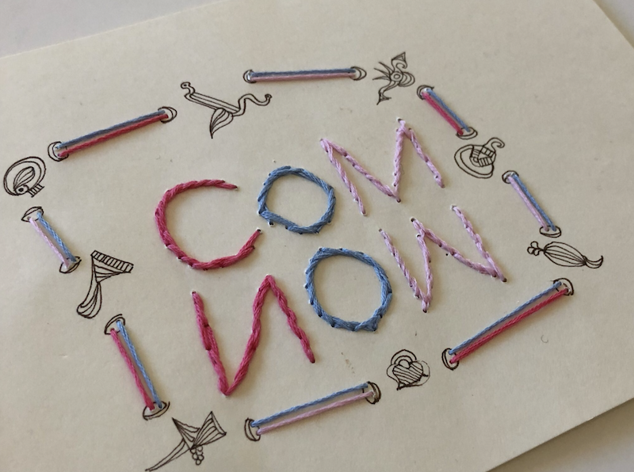
Do-ems (2024)
DO-EMS are ten tiny collaborative game-poems for the Satosphère, a 13-metre dome with 8 projectors and 93 speakers that holds 350 people. A camera mounted 13 metres up tracks where people are, so you play by moving your body.
→ Kali: Draw together on the dome, kaleidoscope style.
→ With Me: Eat dots to grow big and collide to regrow the world.
→ Stick Together: Stay within a moving sphere together.
→ Hug (Knus): Match faces to find connection.
→ Flock: Herd your little friends around.
→ Steer: Collectively steer the dome.
→ Share: Control a large sphere together, growing or shrinking.
→ Stars: Match the constellations.
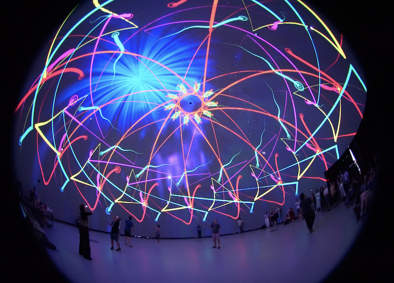
Grow Still (2023)
Grow Still is a game where stillness is the mechanic: you stand still together, and a tree grows from each of you; keep standing and the roots reach toward each other, trading light between you as you grow. Move, and it stops.
A collaborative game-poem made during a residency at Carnegie Mellon with Heather Kelley, developer Targy Feng and technical artist Abhijeet Singh Malhi, and visual artist Ellie. Shown at LIKELIKE, with a companion zine documenting the piece's masks and rituals.
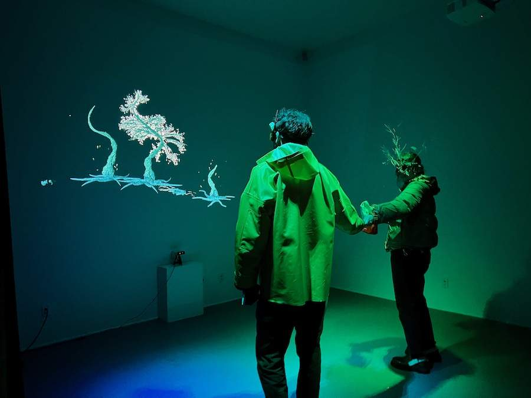
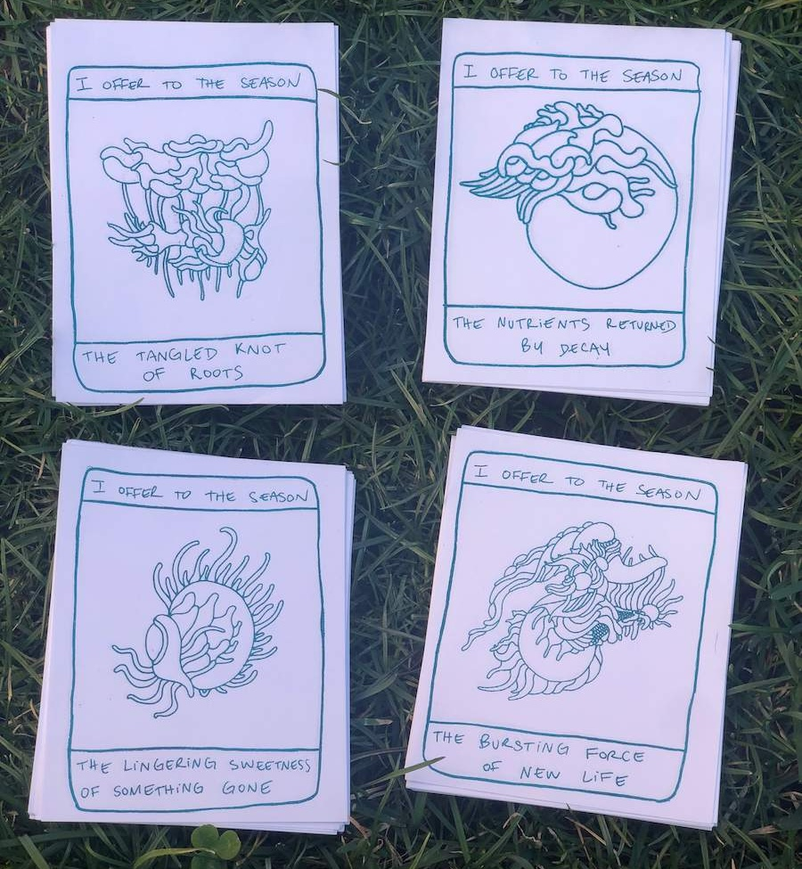
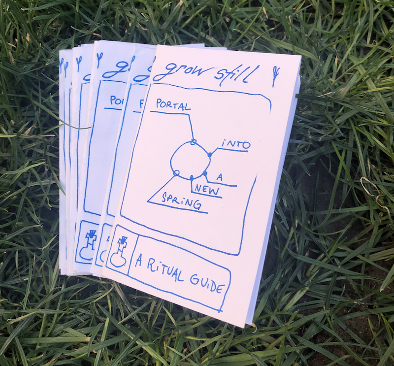
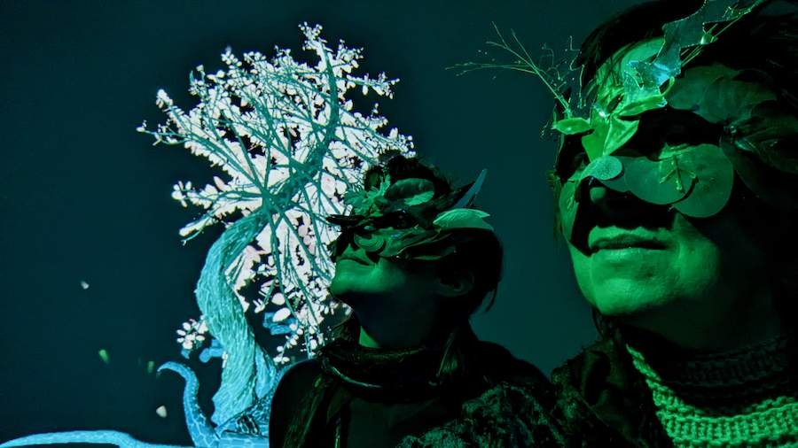
Sound games
Tiny games that people bring to life with their ears, made for Drone Day, the annual celebration of drone and ambient sound I founded and run every year.

Jeux des Lumières (2026, in progress)
Jeux des Lumières is a outdoor game I am making with four spotlights, two cameras and no screen, developed during a residency at the Société des arts technologiques (SAT) in Montréal. It is a project of cocreation with a number of community members. The site is a small public park shared by neighbours who live in the area, and I'm developing the game together with them, including unhoused neighbours working as paid consultants.
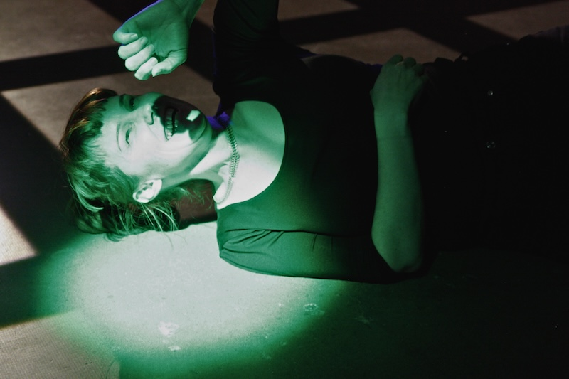
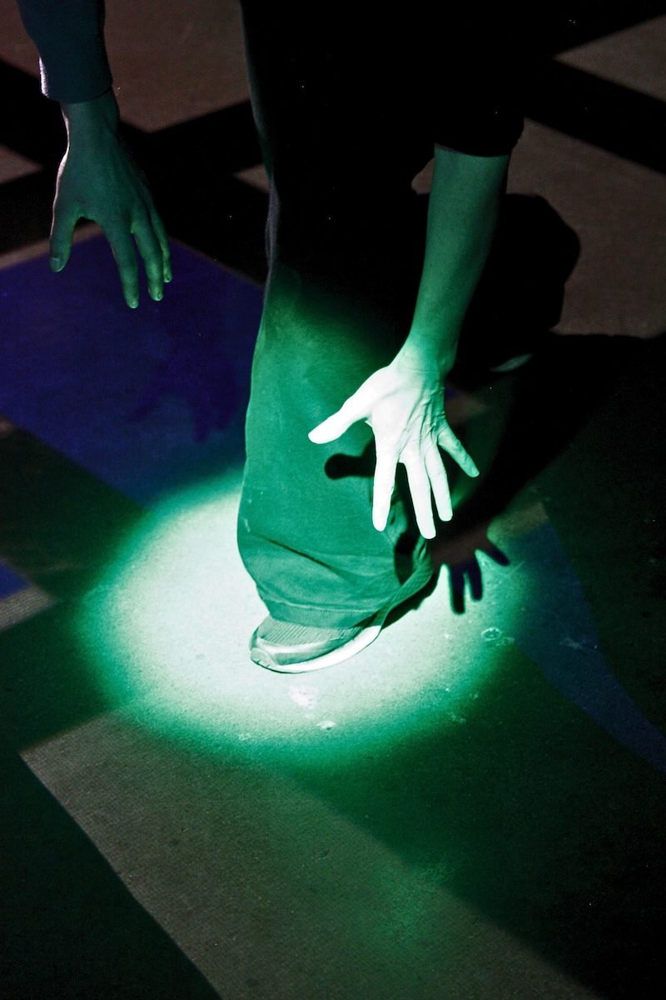
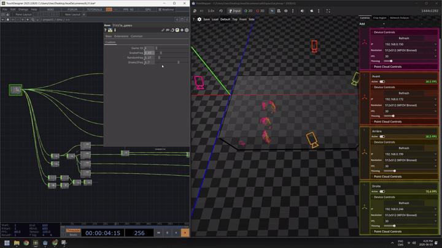
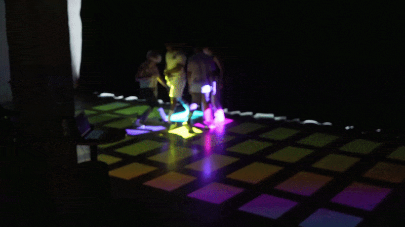